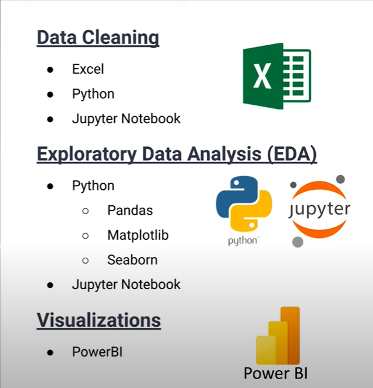
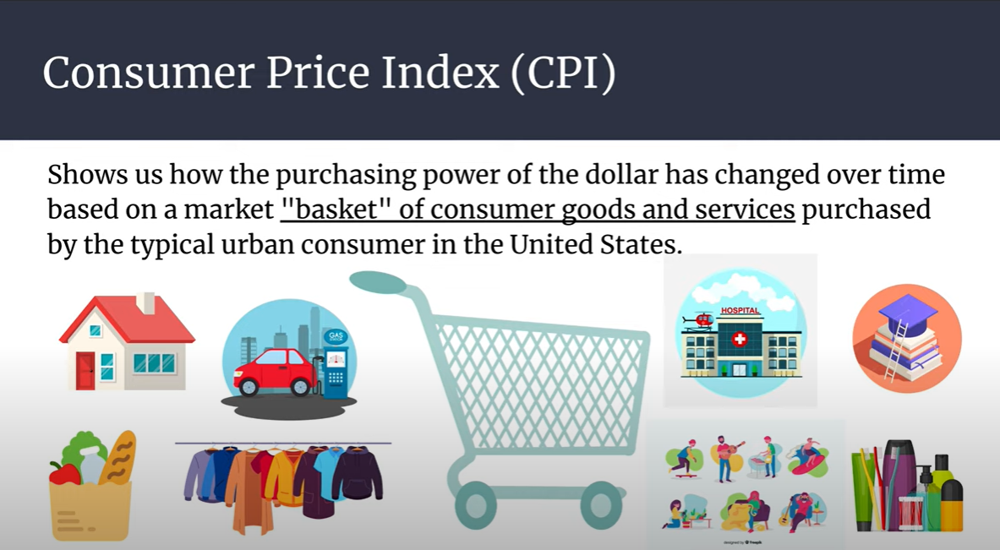
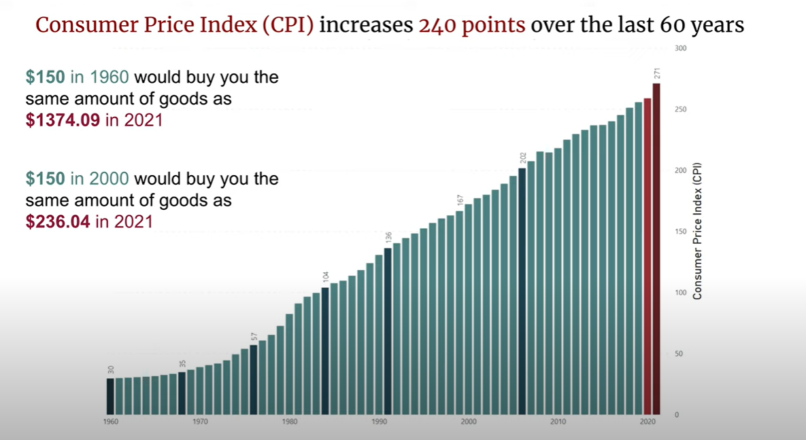
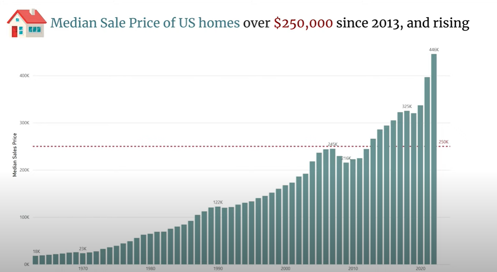
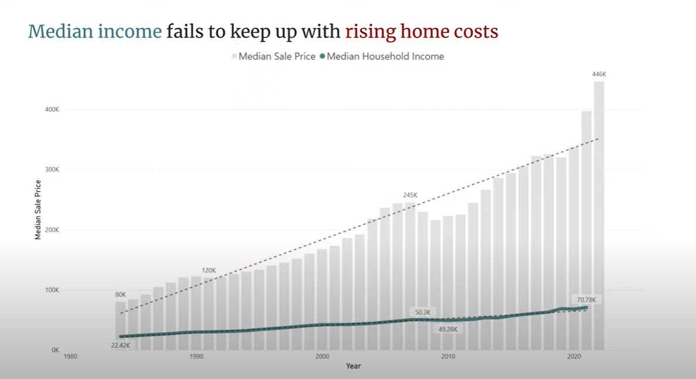
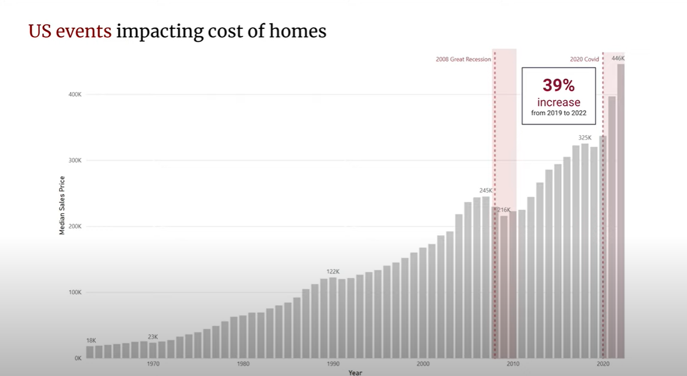
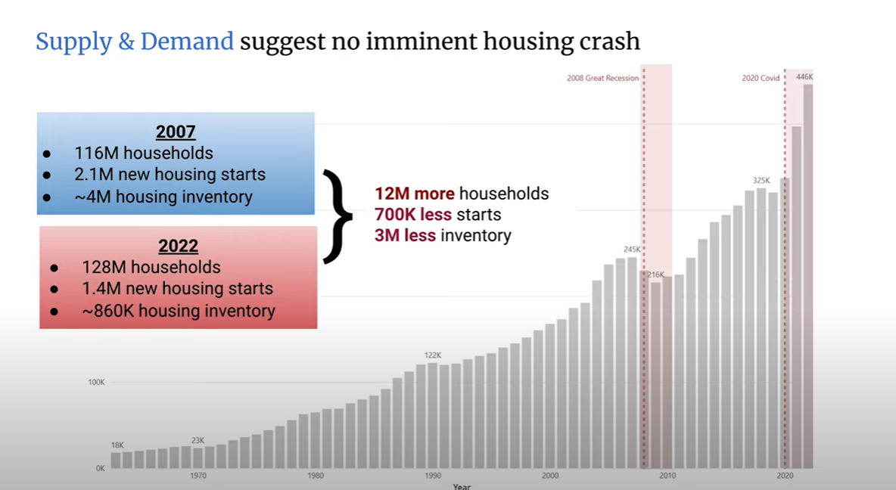
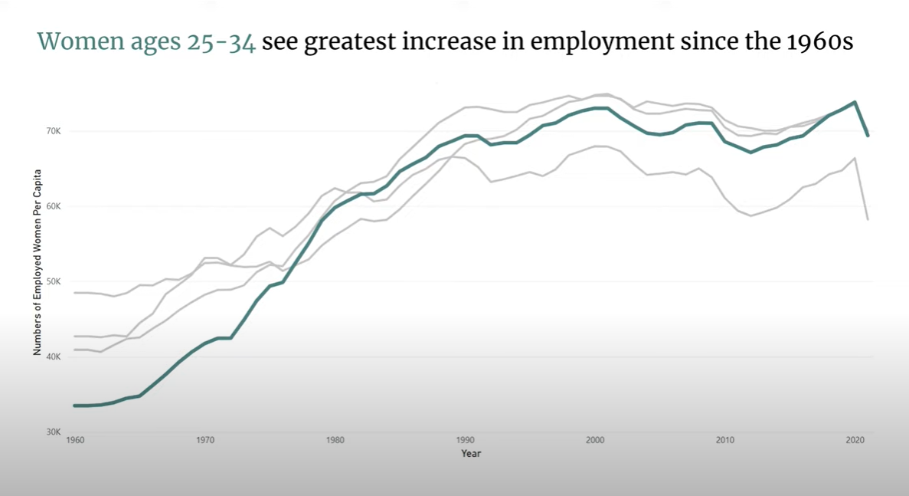
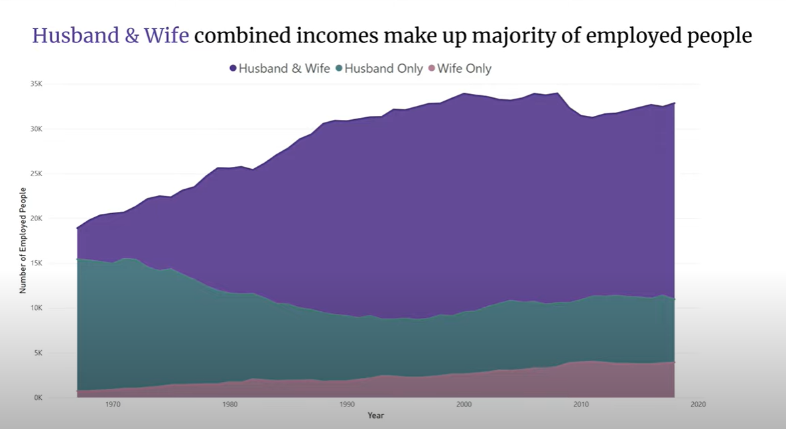

What is the problem?
In today's rapidly evolving economic landscape, families are increasingly finding themselves in a precarious position as the costs of essential goods such as housing and groceries continue to soar. With rising prices putting immense pressure on household budgets, many families are compelled to adopt dual-income models to stay afloat. However, this shift presents its own set of challenges. Balancing the demands of career and parenthood, managing childcare costs, and maintaining a work-life equilibrium can be incredibly taxing.
This analysis aims to shed light on the pressing need for employers to create family-friendly work environments that support working parents. By examining the current financial strains and their impact on families, this presentation seeks to underscore the importance of workplace policies that accommodate the realities of modern parenting and help alleviate the burden on dual-income households.
Data Collection and Analysis
For this project, I couldn't rely on a single data set to gather all the information necessary. Consequently, I had
to collect data from multiple sources, including the U.S. Department of Labor, U.S. Bureau of Labor Statistics, OECD
Labor Force Statistics, Census.gov, and others. The next step involved cleaning and merging the data, primarily
using Excel, followed by some Python cleaning work in a Jupyter notebook.
During my exploratory data analysis and preliminary visualizations, I utilized Python and libraries such as Pandas,
Matplotlib, and Seaborn within a Jupyter notebook. For the final visualizations, I turned to Microsoft Power BI.

Rising Consumer Prices
One of the most crucial indicators of our cost of living is the Consumer Price Index (CPI). The CPI reflects changes
in the purchasing power of the dollar over time. The CPI is based on a market “basket” of consumer goods and services,
comprising eight categories: food and beverages, housing, apparel, transportation, medical care, recreation, education
and communication, and miscellaneous. Housing carries the heaviest weight in the CPI, meaning that as housing costs rise,
so does the CPI.

Examining the CPI over the last 60 years reveals a massive increase of 240 points. To put this into perspective, $150 in 1960 would buy you the same amount of goods as nearly $1,400 in 2021. Similarly, $150 in 2000 would equate to $236 in 2021. In short, prices are rising significantly.

Housing Prices vs. Median Income
Housing is a major factor in the CPI. The median sales price of U.S. homes has seen a dramatic increase over the past
six decades. In 1960, the median sales price of homes was $18,000. By 2013, it had surged to over $250,000—a quarter
of a million dollars.

While rising prices in homes and other goods wouldn't be as concerning if incomes kept pace, the reality is starkly different. Comparing the rise in home prices to median income reveals a significant disparity. In 1984, the median home price was four times the median income. By 2021, it was 5.6 times the median income, and even higher in 2022.

The Housing Market and Economic Events
To understand U.S. home prices further, we must consider historical events. In December 2007, the housing market crashed, plunging the U.S. into a financial crisis. Generally, houses either increase or maintain their value, but the 2008 Great Recession marked the first time in a century that housing prices fell. Then, in 2020, the COVID-19 pandemic led to an unprecedented 39% increase in home prices within just three years.

Given the skyrocketing prices, many, especially first-time homebuyers, are left wondering if there's an impending market crash. However, comparing conditions from 2007 to those of 2022 explains why most experts predict otherwise. There were 116 million households in 2007 and 128 million in 2022. New housing starts were 2.1 million in 2007, but only 1.4 million in 2022. In 2007, there were 4 million houses in inventory ready to be sold, compared to just 860,000 in 2022. With 12 million more potential buyers and significantly lower supply, demand far outweighs supply, indicating that high housing prices are likely here to stay.

The Necessity of Dual-Income Families
With the cost of living and housing only increasing, the question arises: How do we afford it? The answer lies in dual-income families. Analyzing the number of employed women per capita, particularly those aged 25 to 34, shows the greatest increase in employment since the 1960s. This age group, traditionally expected to be at home raising children, is now significantly represented in the workforce. This shift indicates that staying home to maintain the household is no longer a viable option. Women in their childbearing years must work to keep up with the cost of living.

Comparing employment numbers reveals that most families already rely on combined incomes from both spouses. While there was a slight dip in 2008 due to unemployment, the overall trend continues to rise. Mothers can no longer afford to stay at home, as their families depend on their income.

Conclusion & Proposed Solutions
So, what can we do about this? My answer: normalize families in work environments. They most assuredly are going to be there. Here are my proposed action steps:
- Make Companies Family-Friendly
Encourage companies to be accepting of employees' families. Don't hide your family from your employer. Companies should allow employees to have their children in the background during Zoom meetings without making it a big deal.
- Flexible Schedules
Offer flexible schedules. Many mothers, including myself, are highly productive during the morning or after their kids have gone to bed.
- Substantial Maternity and Paternity Leave
This should be standard. Supporting a mother by allowing her spouse or partner to be home during the early days with a new baby is crucial.
- Increase Part-Time Positions
Make more part-time positions available. Many parents would love to increase their family income on a part-time basis, especially when traditional working hours may not typically work for a dual-income family.
- Permanent Remote and Hybrid Positions
Make these permanent options. While we enjoy each other's company, most of us would prefer to spend our breaks with our families. Additionally, remote work allows parents more flexibility should a child become sick and not be able to attend school.
- In-House Daycares and Child Care Credits
Offer these as part of benefits packages. Imagine nurses being able to check on their children at the hospital's employee daycare during breaks, making long shifts more bearable.
- Normalize Career Breaks and Resume Gaps
They aren't a big deal, especially considering the numerous reasons someone might need a break from work.
By implementing these actions, we can better support both mothers and fathers in the workforce while still ensuring they can support their families.
Thank you for watching my presentation. A special shout-out to my DevMountain Foundations 28 and Data 28 cohorts for supporting me throughout this full-time boot camp while I also cared for my two-year-old and newborn baby. It has truly been a wonderful journey, and I thank you all for your support.
Background Story: Why this topic interested me
My name is Kelsey Taylor, I am a wife and mother to two children and am currently employed as an Analytics Engineer.
I started my journey into a tech career out of desperate necessity to provide for my family, so the topic of mothers
in the workforce is of particular interest to me. When my husband got sick back in 2021, I was a stay-at-home mom
with no skillset or means to find work that could provide for my family. I found Tech-Mom’s and graduated Fall 2021,
and so began my journey to break into tech.
The skills Tech-Mom’s taught me opened the door for a scholarship opportunity thereby allowing me to participate in
DevMountain’s Programming Bootcamp where I specialized in Data Analytics. Graduation from there was followed by an
Analytics Engineering internship, and eventual full-time employment as an Analytics Engineer, all while being a
full-time mother and caretaker to my 2-year-old and newborn baby.